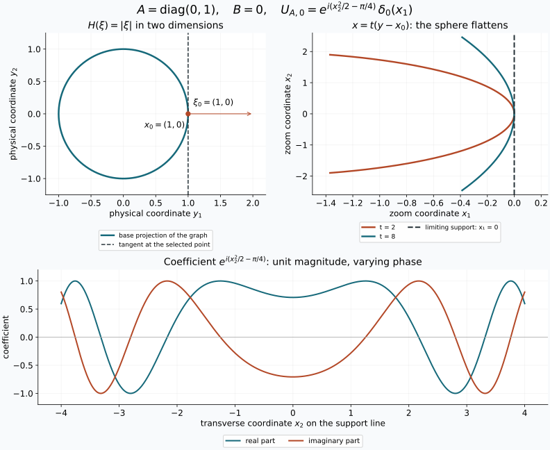

Tangent zoom and quadratic models
The local estimates
below apply to every intrinsic Im distribution through the completed
earlier graph theorem. The Gaussian-symbol companion
proves the exact intrinsic normalization and global Gaussian/Maslov
identification.
At a selected nonzero covector, modulation removes a rapidly oscillating
linear phase. Spatial magnification then leaves a quadratic phase and a
distribution supported on the range of its frequency Hessian. A singular
Hessian produces a delta distribution in the complementary directions.
An ordinary symbol can retain an oscillating leading coefficient, so the
quadratic model need not be a limit with a fixed coefficient.
1. Conventions and the earlier proofs
All distributions and pairings are complex linear. Put Dj=−i∂j,
f(ξ)=∫e−ix⋅ξf(x)dx, and use inverse factor
(2π)−n. A test is a smooth compactly supported function. On a fixed
compact K, write
pK,N(ϕ)=∣α∣≤Nmaxsup∣∂αϕ∣.
A distribution obeys ∣v(ϕ)∣≤CKpK,NK(ϕ) for each such
K. Weak convergence means convergence on every fixed test. In this lesson
vt=OD′(t−a) means that for every fixed compact test
support there are C,N,t0 such that
∣vt(ϕ)∣≤Ct−apK,N(ϕ),t≥t0.(1.1)
This includes uniformity over all tests with the indicated seminorm bounded.
The earlier quadratic stationary-phase component
proves the integration limit rule Q1, complex Gaussian Q2, Schwartz Fourier
estimates Q3, inversion Q4, symmetric diagonalization Q5 and quadratic
Fourier identity Q6. Its complete F0 chains supply the elementary calculus,
integration, compactness and matrix results used here. The earlier
stationary lesson,
Appendix A.4, supplies smooth cutoffs. The selected
uniform-bound proof U1 includes
its full complete-test-space and Baire prerequisites.
These are programme proof texts, with their separate licences.
A smooth symbol b∈Sr(Rn), r∈R, satisfies
∣∂αb(ξ)∣≤Cα⟨ξ⟩r−∣α∣,⟨ξ⟩=(1+∣ξ∣2)1/2.(1.2)
Let H be real, smooth away from zero and positively homogeneous of
degree one. Choose a real smooth extension He agreeing with H
for ∣ξ∣≥R0. For example multiply H by a smooth radial
cutoff vanishing near zero. Define the graph distribution by
u(x)=cn∫ei(x⋅ξ−He(ξ))b(ξ)dξ,cn=(2π)−3n/4.(1.3)
The integral means
u(ϕ)=cn∫e−iHe(ξ)b(ξ)ϕ(−ξ)dξ.
It converges absolutely and is bounded by finitely many Schwartz seminorms
of ϕ, by (1.2) and Q3. Thus it defines a tempered distribution and,
on compact test supports, a distribution. Its Fourier transform is
(2π)n/4e−iHeb, by Q4 and transposition.
The normalization corresponding to the programme's graph order is
r=m−n/4. The earlier
prescribed-phase theorem F6
and intrinsic localization K7
supply the localized graph representation of an intrinsic Im
distribution modulo an error regular at the selected covector.
The forward graph criterion puts its reduced Fourier coefficient in
Sm−n/4; multiplying it by (2π)−n/4 gives exactly
the amplitude b in (1.3). T4 below handles the regular remainder.
The companion's Z1 records this argument with all normalization factors.
2. The frequency-graph zoom
Fix ξ0=0, set x0=H′(ξ0), and choose a real smooth
ψ near x0 with ψ(x0)=0, ψ′(x0)=ξ0.
Write
A=H′′(ξ0),B=ψ′′(x0),QA,B(x,η)=x⋅η−21xTBx−21ηTAη.(2.1)
Both matrices are real symmetric.
Define
UA,B=cn∫eiQA,B(x,η)dη,Wt=t−(2r+n)(ue−it2ψ)(x0+x/t),t≥1.(2.2)
For distributions the last expression is the pullback by the affine map
x↦x0+x/t, followed by the scalar factor. Equivalently,
⟨Wt,ϕ⟩=t−2r⟨u,e−it2ψ(y)ϕ(t(y−x0))⟩.(2.3)
For fixed test support this is defined for all sufficiently large t.
In UA,B, integrate against the test in x first. The resulting
Fourier transform of e−ixTBx/2ϕ decreases faster than every
power, so this definition also converges absolutely.
Theorem T1 (the ordinary-symbol comparison). For every symbol (1.2),
Wt−ctUA,B=OD′(t−1),ct=t−2rb(t2ξ0).(2.4)
The coefficients ct are bounded; they need not converge. The result
holds componentwise for symbols in any fixed finite-dimensional vector
space. The weaker conclusion that the difference tends to zero follows
without choosing any leading homogeneous coefficient.
Proof. Differentiating H(sξ)=sH(ξ) in s at one gives
Euler's identity H(ξ)=ξ⋅H′(ξ). Introduce
bt(η)Rt(η)qt(x)Ft(η)=t−2rb(t2ξ0+tη),=He(t2ξ0+tη)−t2H(ξ0)−tx0⋅η,=t2(ψ(x0+x/t)−ξ0⋅x/t),=∫ei(x⋅η−qt(x))ϕ(x)dx.(2.5)
The substitution ξ=t2ξ0+tη, justified in the absolutely
convergent test pairing, and Euler's identity give exactly
⟨Wt,ϕ⟩=cn∫bt(η)e−iRt(η)Ft(η)dη.(2.6)
The Jacobian is tn; it cancels the t−n in (2.2).
The integral Taylor formula, obtained by applying the fundamental theorem
twice on a segment, gives
qt(x)=∫01(1−s)xTψ′′(x0+sx/t)xds.(2.7)
On each fixed compact K, its difference from xTBx/2 is
O(t−1) in every derivative. Indeed subtract ψ′′(x0)
and apply the fundamental theorem once more; every derivative of the
resulting compact integral is bounded, with its explicit factor 1/t.
Product and chain rules then show, by Q3, that for each L there are
N,C with
∣Ft(η)∣≤CpK,N(ϕ)⟨η⟩−L,∣Ft(η)−F∞(η)∣≤Ct−1pK,N(ϕ)⟨η⟩−L,(2.8)
where F∞=∫eix⋅η−ixTBx/2ϕ(x)dx.
This argument uses the fully proved Fourier derivative estimates; it
does not drop a divergence term from a transposed vector field.
Choose 0<c<∣ξ0∣/2. In ∣η∣≤ct the frequency segment
between t2ξ0 and t2ξ0+tη has size comparable to
t2. The symbol derivative bound and one segment integral give
∣bt(η)−ct∣≤Ct−1∣η∣.(2.9)
For large t, homogeneity and the third-order integral remainder give
on that same region
Rt(η)=21ηTAη+Et(η),∣Et(η)∣≤Ct−1∣η∣3.(2.10)
All points ξ0+sη/t stay in one compact set away from zero,
so the required third derivatives of H have a common bound.
There is also a global estimate
∣bt(η)∣+∣ct∣≤C⟨η⟩2∣r∣.(2.11)
For r≥0, use
⟨t2ξ0+tη⟩≤Ct2⟨η⟩.
For r<0, the near region just considered gives a constant bound;
outside it use ⟨t2ξ0+tη⟩r≤1 and
t2∣r∣≤C⟨η⟩2∣r∣.
Subtract ct⟨UA,B,ϕ⟩ from (2.6). Replacing
Ft by F∞ costs at most Ct−1pK,N(ϕ), by
(2.8), (2.11) and an integrable power bound. In ∣η∣≤ct,
(2.9), (2.10) and ∣eis−eiv∣≤∣s−v∣ for real s,v
give the same bound after integration against F∞.
Outside this region, bound both exponential factors by one and use
(2.11). Taking L>n+2∣r∣+4 in (2.8) makes that tail at most
Ct−1pK,N(ϕ); the rectangular-shell proof is Q3/P18.3.
All constants involve finitely many fixed seminorms. This proves (2.4),
including its uniform test estimate. Finitely many component estimates
give the vector-valued assertion. □
Corollary T2 (classical and complex degrees). If
b(ξ)=br(ξ)+Sr−1 at large frequency, with br
homogeneous of real degree r, then
ct=br(ξ0)+O(t−2),Wt⟶br(ξ0)UA,B.(2.12)
The error of the full distribution is still in general only
OD′(t−1). For a leading term of complex degree
r+iν, ν∈R, with remainder in Sr−1,
t−2iνWt⟶br+iν(ξ0)UA,B.(2.13)
Here t2iν=e2iνlogt; without this demodulation there
need not be a limit. These conclusions follow by evaluating the stated
homogeneity at t2ξ0 in (2.4). A different smooth low-frequency
extension changes (1.3) by an inverse transform of a smooth compact
function, hence by a smooth function by differentiation under its compact
integral. The next theorem proves that such a change has no effect.
3. Covectors where the distribution is regular
We use the Fourier definition: (x0,ξ0), ξ0=0, is
regular for v if some compact smooth χ, equal to one near
x0, has χv decreasing faster than every power in
an open cone about ξ0. No coordinate-invariance theorem about
wavefront sets is assumed in the proof that follows.
Lemma T3 (the compact-distribution Fourier bound). A compactly supported
distribution has a smooth Fourier transform of polynomial growth, and for
every test f
v(f)=(2π)−n∫v(ξ)f(−ξ)dξ.(3.1)
Proof. Choose a smooth compact cutoff χ=1 near the support
and define v(ξ)=v(χ(x)e−ix⋅ξ). Independence
of χ follows from the definition of support. The fixed-support
finite-order bound gives ∣v(ξ)∣≤C⟨ξ⟩M.
Difference quotients of the exponential converge with all derivatives on
suppχ, by the integral Taylor formula; applying
that bound proves smoothness and all differentiated formulas. Invert
f by Q4, multiply by χ, and apply v. To justify moving
v inside the integral, truncate frequency to a cube and approximate
its integral by Riemann sums in the finitely many derivative supremum
norms used by v. Uniform continuity on the two compact sets gives
this convergence. The derivative tails are bounded by
C∫∣ξ∣>R⟨ξ⟩M∣f(−ξ)∣dξ→0,
by Q3. Linearity and the finite-order estimate now give (3.1).
□
Theorem T4 (rapid regular zoom). If (x0,ξ0) is regular for
v, then for every real K and real smooth ψ with the
same value and first derivative as in Section 2,
tK(ve−it2ψ)(x0+x/t)=OD′(t−L)for every L>0.(3.2)
Proof. Fixed compact tests use only a neighborhood on which χ=1
for large t, so replace v by χv. For linear
ψ(y)=ξ0⋅(y−x0), (3.1) and the affine substitution give
the pairing
(2π)−ntK+n∫eix0⋅(t2ξ0+tη)χv(t2ξ0+tη)ϕ(−η)dη.(3.3)
For some c>0, ∣η∣<ct puts the Fourier argument in the
regular cone with norm at least ct2. Arbitrarily high cone decay
makes this part smaller than any specified power of t, uniformly
in finitely many test seminorms. On ∣η∣≥ct, Lemma T3 bounds
the Fourier factor by Ct2M⟨η⟩M. Q3 bounds
ϕ by any inverse power with a finite test seminorm.
Choose that power greater than K+n+2M+L+M+n+1, increasing it to a
positive integer if necessary. The tail in (3.3) is O(t−L).
For general ψ, replace the test by e−iqtϕ.
Formula (2.7) bounds every required seminorm of these tests uniformly,
so the same estimates apply. This proves the asserted uniform result.
□
A smooth error is regular at each nonzero covector: its localized smooth
compact representative has rapid Fourier decay by Q3. More generally,
any remainder satisfying the specified microlocal regularity is harmless
in T1 for every real r, by taking K=−(2r+n) in T4.
4. Nonlinear coordinates, frames and phases
Lemma T5 (tangent pullback). Let κ be a smooth local
diffeomorphism, κ(0)=0, T=κ′(0). Put
κt(x)=tκ(x/t). If vt→v weakly as t→∞,
then, locally on every fixed compact test support,
κt∗vt⟶T∗v.(4.1)
This holds both for scalar distributions and for distributional
half-densities. Scalar pullback sends a test ϕ to
ϕ∘κt−1∣detDκt−1∣; half-density pullback
uses the power 1/2 instead of one.
Proof. The segment identity
κt(x)=∫01κ′(sx/t)xds proves convergence to
Tx in every derivative on bounded sets. The inverse map is explicitly
κt−1(y)=tκ−1(y/t) wherever needed, so the same
proof gives convergence to T−1y. For a fixed test support K,
the images κt(K) lie in one compact set K′ and in a
common domain of these inverses for large t. This follows directly
from the uniform convergence to T and the expanding scaled domain
of the original local inverse. Choose K′ slightly larger than those
images. Extending the transformed tests by zero is smooth, and their
supports stay in the interior of K′.
The determinant is a polynomial in the derivative entries. Its absolute
value is bounded away from zero near the compact sets in question,
because the limiting matrix is invertible. Thus the absolute determinant
and its positive square root, with all derivatives, converge to the
constant factors for T−1. Chain and product rules show convergence
of the transformed tests in every derivative on K′.
To apply a weakly convergent distribution to these moving tests, take
any sequence tj→∞. The selected programme theorem U1 gives
one finite-order bound for vtj on K′, and its moving-test
conclusion gives (4.1) along that sequence. If a scalar test pairing failed
to converge as t→∞, its failure would supply a sequence
tj≥j bounded away from the proposed limit, a contradiction.
Thus (4.1) holds for the parameter itself. This argument does not assume
uniform boundedness over unexamined finite intervals of t.
□
The same proof gives an O(t−1) difference between
κt∗vt and T∗vt whenever vt already has a
uniform local finite-order bound: the transformed tests differ by
O(t−1) in every derivative, using one more segment Taylor formula.
T1 supplies such a bound even when ct does not converge. Thus the
ordinary-symbol comparison itself, as well as a convergent classical
limit, transforms by the tangent linear map.
For a smooth finite-dimensional frame change G,
G(x0+x/t)−G(x0)=O(t−1) in every compact derivative norm.
The same finite-order estimate therefore replaces the frame by its
value at x0. For half-densities the pullback exponent above follows
also from the ordinary-function rule
f(κ(x))∣detDκ(x)∣1/2: substituting variables in the
pairing leaves ∣detDκ−1∣1/2. This establishes the
convention without assuming a transformation formula for distributions.
In particular, if the original object is u(y)∣dy∣1/2, its
normalized half-density zoom is t−2m times the pullback of
e−it2ψu(y)∣dy∣1/2 by y=x0+x/t.
The pullback contributes t−n/2, so its coefficient in
∣dx∣1/2 is exactly Wt, since 2m=2r+n/2.
Under a nonlinear chart change, the two scaled charts differ by
κt; T5 therefore gives the tangent half-density rule
with the same normalization.
If p(x0)=0, p′(x0)=0, and C=p′′(x0), then (2.7) gives
t2p(x0+x/t)→xTCx/2 in every compact derivative norm. Hence
changing ψ to ψ+p gives
UA,B+C=e−ixTCx/2UA,B.(4.2)
The exact equality also follows directly from the defining test integral.
These changes compose by addition of symmetric matrices. Every such
matrix is realized by the quadratic function p(y)=(y−x0)TC(y−x0)/2,
so the action on phase second derivatives is transitive.
5. The singular quadratic distribution
Let k=rankA, R=ranA,
Z=kerA, and use the orthogonal split x=(y,z)∈R⊕Z.
Symmetry gives R=Z⊥: Aη is orthogonal to each kernel
vector, and the dimensions agree by the rank-nullity proof in the earlier
linear-algebra chain. The restriction AR:R→R is invertible;
write BR for the restriction of the quadratic form B to R.
Theorem T6. In the orthonormal coordinates just specified,
UA,B(y,z)=(2π)n/4−k/2∣detAR∣−1/2e−iπsgnAR/4e2iyT(AR−1−BR)yδ0(z).(5.1)
For k=0, the empty determinant is one and the signature is zero;
the formula is (2π)n/4δ0(x).
Proof. Diagonalize AR by the proved Q5. Insert
e−ε∣η∣2/2 in the defining integral. On testing,
the limit as ε↓0 follows from the integrable
Schwartz bound already used in (2.2), by Q1. Each nonzero eigenvalue
a contributes the elementary Gaussian
(2π)1/2(ε+ia)−1/2exp(−2(ε+ia)y2),(5.2)
where the square root has positive real part. Q2 gives its limit
(2π)1/2∣a∣−1/2e−iπsgn(a)/4eiy2/(2a).
The factors are uniformly bounded in absolute value for small positive
ε, including their prefactors. Each kernel direction
contributes (2π/ε)1/2e−z2/(2ε).
Its integral is 2π, and its mass outside any fixed neighborhood
of zero tends to zero after the substitution z=εw,
by the Gaussian tail estimate from Q2. Thus in d=n−k such directions
the product tends to (2π)dδ0(z).
For completeness, these limits can be combined against a Schwartz test:
the kernel Gaussian has uniformly bounded total mass; on a large compact
y-set the other factors converge uniformly and the test is uniformly
continuous in z; outside that y-set, a sufficiently high power
of ⟨y⟩−1 bounds the test uniformly in z.
The uniform bound on the oscillatory factors then makes the remaining
tail arbitrarily small. This is the compact-plus-tail argument Q1 and
does not require an interchange of two unevaluated oscillatory integrals.
Finally multiply by e−ixTBx/2. At z=0 this is precisely
e−iyTBRy/2; cross terms vanish. Combining powers gives
−3n/4+k/2+(n−k)=n/4−k/2, proving (5.1).
□
Multiplication by this chirp preserves the Schwartz test space:
each derivative of the chirp is the chirp times a polynomial, by induction
with the product rule. Every weighted derivative of its product with a
Schwartz function is therefore bounded by finitely many Schwartz
seminorms. This also proves continuity of the tempered distribution
defined in (5.1).
Differentiating Euler's identity in ξ gives
H′′(ξ)ξ=0. Consequently the radial direction ξ0 is
always in the kernel in this homogeneous graph problem. Assuming the
full matrix A invertible would discard the actual conic case.
6. The two tangent planes
In the cotangent coordinates (x,ξ), use
ω=∑dξj∧dxj, so
ω((v,w),(v′,w′))=w⋅v′−w′⋅v. The graph
ξ↦(H′(ξ),ξ) has tangent plane
{(Aη,η)}. The graph of dψ has tangent plane
{(v,Bv)}. Both have dimension n; their symplectic pairings
vanish by symmetry of A or B. This verifies the Lagrangian
property directly, where a Lagrangian plane means an n-dimensional
subspace with zero restricted symplectic form.
Subtracting the phase gradient applies the linear shear
(v,w)↦(v,w−Bv). It preserves ω, since its additional
terms cancel by symmetry of B, and sends the second plane to
{(v,0)}. The first becomes
λA,B={(Aη,η−BAη):η∈Rn}.(6.1)
Its parametrization is injective: if both components vanish, the second
is η. It therefore still has dimension n. The generating
quadratic QA,B yields exactly this plane, because
∂ηQ=x−Aη=0 and
∂xQ=η−Bx. These calculations establish all assertions
about the planes without importing a general normal-form theorem.
6.1. The intrinsic symbol and Gaussian line
Put B=ΩΛ1/2⊗L⊗π∗E,
where L is the relative Maslov line, and let
s∈Sm+n/4(Λ;B) represent the principal-symbol class.
The companion Z2–Z4
constructs the canonical map Jρ to families of
distributional half-densities on Tx0X, indexed by phase second jets.
In a frequency chart it sends β∣dξ∣1/2, evaluated in
the geometric Maslov line at the horizontal transversal, to
βUA,B∣dv∣1/2.
Theorem T8 (intrinsic tangent comparison). Write
δR(x,ξ)=(x,Rξ) and at(v)=x0+v/t in a local chart.
Then
t−2mat∗(e−it2ψu)=Jρ(t−2m−n/2(δt2∗s)ρ)ψ+OD′(t−1).(6.2)
The complete proof is Z5:
the intrinsic graph representative gives T1, T4 removes its microlocally
regular error, and the half-density radial factor is tn, giving
precisely ct=t−2rb(t2ξ0).
A lower-order symbol changes the right side by only
OD′(t−2). Z4 and T5 prove coordinate and frame
independence, including the second-derivative term of a nonlinear chart.
For a leading homogeneous symbol, (6.2) converges to its fibre value
under Jρ. Ordinary symbols need not have that limit.
Z6 checks dilation and all signature factors; Z7 gives an exact nonlinear
chart example with a nontrivial fourth-root transition.
7. Exercises and complete solutions

Figure 1. The exact two-dimensional case c=ρ=1, B=0,
in Exercise 2. The first panel is the base projection y=(cosθ,sinθ); it does not depict the full cotangent graph. The second
plots x=t(cos(s/t)−1,sin(s/t)), ∣s∣≤2.5, for t=2,8,
with limiting support x1=0. The last panel shows the real and
imaginary parts of the coefficient of δ0(x1), not a pointwise
graph of a delta distribution. Its magnitude is one. T1 and T6 prove the
zoom and its exact normalization; Section 6 gives the corresponding
cotangent plane. The free generating-function comparison is
Guillemin–Sternberg §5.15.4. Reproducible figure source.
Exercise 1 — the three scales. Suppose the carrier frequency is of
size ta, the spatial zoom is t−b, and the frequency window
is tc, with b,c>0. Find the scales for which the mixed term
and both generic quadratic terms survive at order one.
Solution. The mixed term scales as tc−b. A homogeneous
degree-one frequency Hessian at frequency taξ0 has size
t−a, so the frequency quadratic scales as t2c−a.
The modulating phase quadratic scales as ta−2b. Setting all
three exponents to zero gives a=2b=2c. Conversely those equalities
make all three factors one. This concerns the generic quadratic model;
a particular vanishing Hessian does not force its absent term to survive.
Exercise 2 — a sphere. For H(ξ)=c∣ξ∣, ξ0=ρω,
ρ>0, ∣ω∣=1, compute (5.1), including n=1.
Solution. Differentiating the positive square root gives
x0=cω and A=(c/ρ)(I−ωωT). For c=0,
R=ω⊥, Z=Rω, and k=n−1. Writing
x=y+zω, the answer is
(2π)(2−n)/4(ρ/∣c∣)(n−1)/2e−iπ(n−1)sgn(c)/4e2iyT((ρ/c)I−BR)yδ0(z).(7.1)
For n=1 all transverse matrices are empty, giving
(2π)1/4δ0(x). For c=0, the rank is zero in every
dimension and (5.1) gives (2π)n/4δ0(x).
Exercise 3 — no fixed limit for an ordinary symbol. In one dimension
take H=0, x0=0, ξ0=1, ψ(x)=x, and a smooth
symbol equal to ξr(2+sinlogξ) for ξ≥2 and zero
for ξ≤1. Prove that the zoom does not converge. Preserve the
example after cutting off the distribution near zero.
Solution. Repeated differentiation of the expression on ξ≥2
gives ξr−j times a fixed linear combination of one, sine and
cosine. On the compact transition region all derivatives are bounded.
Thus b∈Sr, while ct=2+sin(2logt) for large t.
Here U0,0=(2π)1/4δ0. Along
tj=eπj+π/4 the coefficient is three, and along
sj=eπj+3π/4 it is one. T1 and a test with value one at
zero give distinct limits.
Let χ be compact smooth and equal to one near zero. The reduced
symbol of χu, obtained by testing (1.3) with
χ(x)e−ixξ, is the absolutely convergent convolution
bχ(ξ)=(2π)−1∫χ(ζ)b(ξ−ζ)dζ.(7.2)
Fourier inversion gives (2π)−1∫χ=χ(0)=1.
For every j, differentiate (7.2) under its integrable Schwartz
majorant and subtract b(j)(ξ). On
∣ζ∣≤∣ξ∣/2, ∣ξ∣≥2, the segment derivative estimate
bounds the difference by C∣ζ∣⟨ξ⟩r−j−1.
On its complement,
∣b(j)(ξ−ζ)∣+∣b(j)(ξ)∣ is bounded by a fixed
polynomial in ⟨ξ⟩ and ⟨ζ⟩;
arbitrary Schwartz decay of χ, together with
∣ζ∣>∣ξ∣/2, gives the same desired bound, even when
r−j−1<0. Bounded ξ is handled by the common integrable
majorant. Hence bχ−b∈Sr−1, including every derivative.
Its contribution to ct is O(t−2), so the two limits persist
for this compactly supported example. No general unproved symbol
composition rule is used.
Exercise 4 — a nonlinear half-density pullback. Near zero let
κ(x)=ax+dx2, a=0. Compute the pullback of
δ0∣dy∣1/2, and compare its tangent zoom.
Solution. Restrict to a neighborhood on which κ is a
diffeomorphism. Its inverse derivative at zero is 1/a, so the test
formula in T5 gives
κ∗(δ0∣dy∣1/2)=∣a∣−1/2δ0∣dx∣1/2.
The scalar factor would instead be ∣a∣−1. Now
κt(x)=ax+dx2/t has the same derivative at zero for every
t; its half-density pullback of the delta is exactly the same
distribution. In particular its tangent limit agrees, for either sign
of a, without an orientation sign.
Exercise 5 — conjugation. Determine the model of u
at the opposite covector and compare (5.1).
Solution. Complex conjugation of a distribution means
u(ϕ)=u(ϕ). Conjugate the
absolutely convergent test pairing (1.3) and change ξ to −ξ.
Then H(ξ)=−H(−ξ),
b(ξ)=b(−ξ), and the chosen covector is
−ξ0, with the same base point. Its Hessian is −A.
Taking phase −ψ gives −B, and
UA,B=U−A,−B.(7.3)
This follows either by η↦−η in the test integral or
directly from (5.1): the absolute determinant is unchanged and the
signature and quadratic exponent change sign. Half-density Jacobian
factors are real positive, so they commute with conjugation. A complex
bundle frame changes to its conjugate frame. Thus the local Gaussian
transition factors also conjugate. The global identification is supplied
separately by Z4 of the Gaussian-symbol companion; the local conjugation
calculation agrees with it.
Exercise 6 — the first error can be t−1. In one dimension
take u=Dqδ0, q≥0, and ψ(x)=ξ0x,
ξ0=0. Compute the normalized zoom exactly.
Solution. Its Fourier transform is ξq, so
b=(2π)−1/4ξq, r=q, m=q+1/4. Leibniz's rule
inside the delta derivative pairing gives
e−it2ξ0xDqδ0=k=0∑q(kq)(t2ξ0)q−kDkδ0.
Indeed the q−k derivatives falling on the exponential cancel the
corresponding factors of i in the distributional derivative pairing.
The affine test formula gives
(Dkδ0)(x/t)=tk+1Dkδ0(x). Consequently
Wt=k=0∑q(kq)ξ0q−kt−kDkδ0.(7.4)
The leading term is ξ0qδ0, exactly T2 and (5.1).
For q≥1, the first error is
qξ0q−1t−1Dδ0, which is nonzero: test with a compact
smooth function whose derivative at zero is one. The higher terms are
O(t−2) on that test. Thus a universal O(t−2) error for
the complete zoom is false even for a classical symbol. For q=0,
the formula is exact with zero error.
8. Free readings and programme closure
- Sombuddha Bhattacharyya, Maarten V. de Hoop, Vitaly Katsnelson and Gunther
Uhlmann, Recovery of piecewise smooth density and Lamé parameters from
high-frequency exterior Cauchy data,
version 1, 16 March 2022, Section 3.1 and Proposition 3.3 with its
Appendix A argument. These motivate the distributional rescaling and
coordinate comparison. The present proof supplies the common-support
estimate and keeps one modulation sign throughout; the paper's other
operator claims and its bibliography are not imported.
- Victor Guillemin and Shlomo Sternberg, Semi-classical Analysis, free
author draft of 13 January 2010,
Section 5.15.4 and Chapter 14. The quadratic generating-function viewpoint
is compared in Section 6; every map and dimension assertion used there
is calculated directly. The earlier stationary component proves the
Gaussian normalization and limit estimates used here.
- Semyon Dyatlov, Lecture notes for 18.155,
Section 4.3, supplies the free comparison for the selected programme
uniform-bound and moving-test proofs. Their actual proofs accompany
this lesson; the citation does not replace them.
The completed intrinsic graph, localization, phase and principal-symbol
proofs are linked in the Gaussian-symbol companion. Its Z1–Z6 prove the
remaining graph-to-zoom and global bundle connection. No paid work supplies any
argument in this receiving draft.
Original receiving exposition and exercises: GPT-6 Astra (OpenAI), Ultra,
4 October 2026, CC0. The separate earlier programme components retain
their own CC BY-SA 4.0, CC0 or GFDL 1.2-only notices.